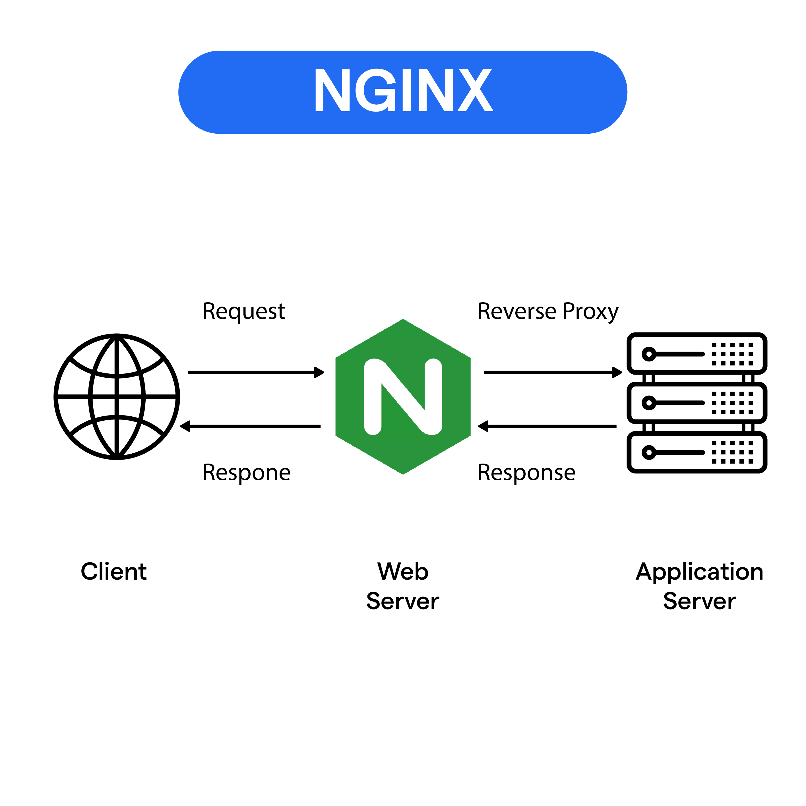
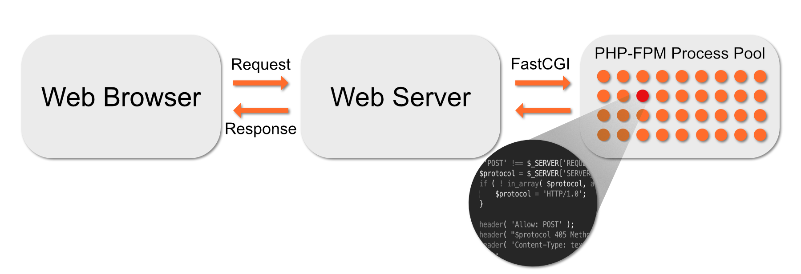
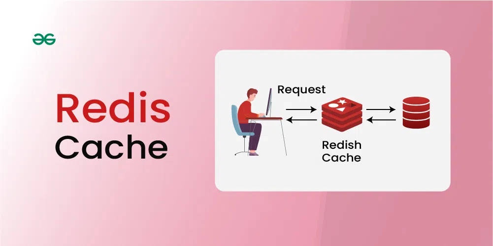
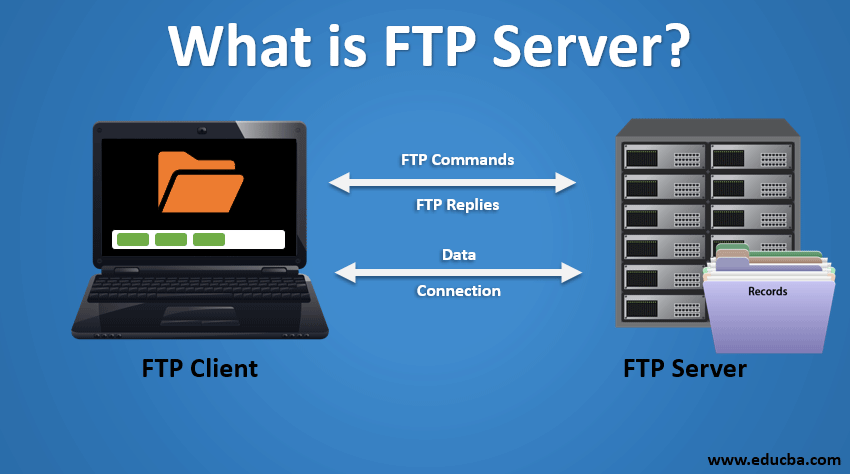
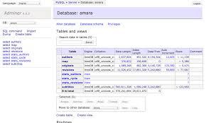

What is Docker?

Docker is a powerful platform that enables you to develop, deploy, and run applications in isolated environments called containers. Containers allow you to package an application with all of its dependencies, including the operating system libraries, making it portable and easier to deploy across different systems.
Containers are lightweight and efficient because they share the host system's operating system kernel but remain isolated from other containers. This makes Docker containers faster to start and smaller in size compared to traditional virtual machines.
Key Docker Features
- Portability: Package your application and its dependencies into a container and run it anywhere.
- Efficiency: Containers share the host kernel, reducing resource usage compared to virtual machines.
- Isolation: Ensure that applications run in their own secure, isolated environments.
- Scalability: Easily scale applications using Docker Swarm or Kubernetes.
Common Use Cases
- Microservices architecture: Deploy applications as a collection of loosely coupled services.
- Development environments: Quickly set up and share development environments with teams.
- Continuous Integration/Continuous Deployment (CI/CD): Streamline testing and deployment processes.
- Application modernization: Containerize legacy applications for easier management and scalability.
Docker Compose
Docker Compose is a tool that simplifies managing multi-container applications. Instead of manually creating and starting each container, you can define all of your services in a YAML file (docker-compose.yml) and use a single command (`docker-compose up`) to start the entire environment.
This is useful for setting up complex applications where multiple containers need to communicate, such as a web server, database, and caching service. Docker Compose automatically handles networking between containers and volume mounts to persist data.
NGINX
NGINX is a powerful web server and reverse proxy server. In a Dockerized environment, NGINX can be used to serve static files, such as images, JavaScript, and CSS, and act as a reverse proxy for other services like PHP-FPM, MySQL, or Redis.
NGINX can handle a high number of concurrent connections due to its event-driven architecture, making it ideal for performance-heavy applications. It is often used in conjunction with PHP-FPM to serve WordPress sites.
WordPress

WordPress is a popular open-source content management system (CMS) used for building websites and blogs. When running WordPress in Docker, you can isolate your site from the underlying operating system, simplifying deployment and scaling.
WordPress requires a MySQL or MariaDB database to store content. By using Docker, you can easily spin up a WordPress container alongside a database container for a fully functional website setup.
PHP-FPM
PHP-FPM (FastCGI Process Manager) is an advanced PHP implementation that improves the performance of PHP applications. It is often used alongside NGINX to process dynamic PHP content in web applications, such as WordPress.
PHP-FPM runs PHP as a fast CGI service, enabling NGINX to handle static files and proxy dynamic PHP requests to PHP-FPM. This combination is highly efficient, as NGINX can serve static content directly and pass PHP processing to PHP-FPM.
MariaDB

MariaDB is a high-performance, open-source database management system. It is a fork of MySQL and is often used as the database backend for applications like WordPress.
In a Docker setup, MariaDB is typically run in its own container, separate from the WordPress container. Docker Compose can be used to manage the connection between these containers, ensuring that the WordPress container can access the MariaDB container securely.
Redis Cache
Redis is an in-memory data structure store used as a database, cache, and message broker. In a Dockerized WordPress setup, Redis is commonly used as a caching layer to improve site performance by reducing database queries for frequently accessed content.
Redis can be run in its own Docker container, and Docker Compose allows you to easily integrate Redis with WordPress to speed up page loading times and reduce server load.
FTP Server
An FTP server allows file transfers between systems. In a Docker setup, FTP servers are often used to enable file uploads and downloads from the containerized environment. FTP can be run in active or passive mode.
In active mode, the FTP client opens a port for the data transfer, while in passive mode, the server opens the port. Passive mode is typically used in Docker due to networking limitations and firewall configurations.
Adminer
Adminer is a database management tool, similar to phpMyAdmin. It is lightweight and supports multiple database systems, including MySQL and MariaDB.
Adminer allows you to manage databases directly from your web browser, providing a simple interface for database tasks such as creating tables, running queries, and managing users. When running in Docker, Adminer can be deployed in its own container alongside your database containers.
Portainer
Portainer is a web-based management tool for Docker. It provides a simple and intuitive UI for managing your Docker containers, networks, volumes, and images. Portainer can be deployed in its own container and connects to your Docker host to give you a visual interface for managing your environment.
With Portainer, you can easily monitor container status, view logs, and perform common management tasks without needing to rely on the command line.